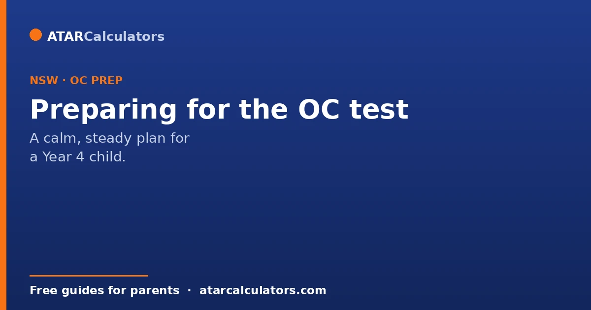
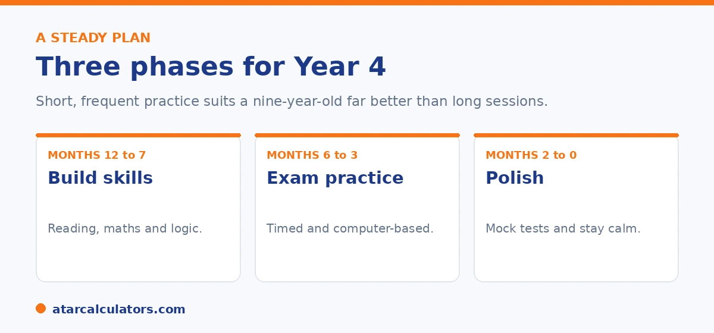

Here is the short version. Spread preparation over several months. Build core skills in reading, maths, and logic first, then add timed, computer-based practice. Give real attention to Thinking Skills, which is the least familiar section and cannot be crammed. Keep sessions short and frequent, since a nine-year-old learns little when tired. The Department says coaching is not necessary, so steady home practice can do the job.
Good preparation for the OC test is steady, not intense. The test checks reasoning skills your child has been building for years, so the aim is to sharpen them calmly.
Below is a practical plan suited to a Year 4 child. To track progress with practice results, use our OC score calculator.
Key takeaways
- Spread preparation over several months, not weeks.
- Build core skills first, then add exam practice.
- Give real attention to Thinking Skills, the unfamiliar section.
- Practise on a computer, under time limits, before the test.
- Keep sessions short and frequent. A tired child learns little.
- The Department says coaching is not necessary.
Start with the right mindset
First, a reality check that helps. The Department says coaching is not necessary, and there is no solid evidence it secures a place. What helps is steady practice that builds genuine skills, especially the reasoning the test rewards.

So you do not need an expensive program. You need a plan, some good materials, and consistency, all kept low pressure for a young child.
Phase one: build the skills
For the first stretch, focus on building skills rather than sitting practice exams. Read together every day and talk about the texts. Practise mental maths and simple problem solving without a calculator. Start gentle logic puzzles to warm up reasoning.
This is the time to begin Thinking Skills, since it is the least familiar section and cannot be crammed. Short, regular sessions work far better than long ones for a Year 4 child.
Phase two: add exam practice
In the middle months, add structured, exam-style practice. Use up-to-date materials that match the current format. Begin timing sections gently, so your child gets used to the pace without feeling rushed.
Practise on a computer, since the test is fully on screen. Familiarity with the interface removes a real source of stress on the day.
Want to track practice results over time?
Try the OC score calculator →Phase three: polish and settle
In the final weeks, run full, timed mock tests under realistic conditions. The goal is not new content but stamina, pacing, and removing surprises. Review every mistake by type, looking for the recurring slip rather than the score.
Then taper in the last fortnight, so your child arrives fresh. A calm, well-rested child shows what they can really do.
Preparing for Thinking Skills
Thinking Skills deserves special mention, because most Year 4 children have never seen questions like it. It tests logic, reasoning, and pattern questions that the classroom does not teach directly.
It cannot be crammed, which is why it belongs in the early phase. Regular, short practice with the question types, spread over months, builds the reasoning the section rewards. For what each section measures, see our OC score breakdown.
Thinking Skills is the section where thoughtful preparation makes the biggest difference, precisely because it is so unfamiliar. Unlike reading and mathematical reasoning, which build on classroom learning, it tests logic, deduction, pattern recognition and the ability to work through unfamiliar problems. These are skills that are rarely taught directly in Year 4. That has two implications. First, do not leave it to the end. Because it draws on reasoning that develops gradually, short and regular practice over months is far more effective than a late burst. And it is the section that improves most with steady exposure to the question types. Second, focus on understanding rather than memorising. The value comes from your child learning how to approach a logic or pattern problem. That means breaking it down, testing possibilities, and spotting the underlying rule. It does not come from drilling specific questions they will never see again. Gentle, curiosity-led practice works well here. Puzzles, logic games and reasoning questions framed as something interesting rather than a chore keep a young child engaged and build genuine thinking. That is exactly what the section rewards. Thinking Skills carries the same weight as reading and maths, but it is the one families most often overlook. So giving it early and consistent attention is one of the most efficient things you can do. A child comfortable with its style of problem, built up calmly over time, walks into that section with a real and often decisive advantage.
Keeping it healthy
Finally, protect your child's wellbeing. A nine-year-old under pressure loses both confidence and focus. Keep sessions short, build in plenty of play and downtime, and remember that one test does not define a child.
If your child does not get a place, the reasoning skills they have built still help them. And many go on to sit the selective test in Year 6. For the full picture, see our OC score guide.
Keep preparation age-appropriate
These are Year 4 children, so keep preparation light, playful and short. Long study sessions do more harm than good at this age, raising stress without much benefit.
So think in terms of short, friendly bursts: a little reading together, a few puzzles, some familiarisation with the format. Protecting your child's enjoyment of learning matters more than any single practice session.
Reading is the best preparation
For a Year 4 child, reading together is the single most useful thing you can do. It builds the vocabulary and comprehension that the reading and thinking sections rely on, without feeling like study.
So make reading a shared, enjoyable habit. Talk about the stories, ask what might happen next, and let your child read what they love. This does more over time than any worksheet.
Common questions
How do I prepare my child for the OC test?
Spread preparation over several months. Build core skills in reading, maths, and logic first, then add timed, computer-based practice. Give real attention to Thinking Skills, and keep sessions short and low pressure for a Year 4 child.
When should OC preparation start?
Several months before the test is sensible, which lets skills build without stress. Reasoning skills, especially Thinking Skills, are long-build and cannot be crammed, so steady practice over time works best.
How do you practise Thinking Skills for the OC test?
With regular, short practice on the question types, spread over months. It tests logic, reasoning, and pattern questions the classroom does not teach directly, so familiarity is what helps. It cannot be crammed.
How much preparation is needed?
Quality matters more than volume. Short, frequent sessions suit a nine-year-old, and reviewing every practice mistake beats racing through papers. Coaching is not necessary, according to the Department.
Do practice tests help for the OC test?
Yes, used well. Computer-based, timed practice removes surprises about the format on the day. Review each mistake by type rather than chasing the score, and taper in the final fortnight.
Is coaching necessary for the OC test?
No. The NSW Department of Education says coaching is not necessary and does not recommend it, and there is no solid evidence it secures a place. Consistent home practice can do the job.
Track practice results
Enter practice section results for a rough competitiveness guide. Free, and no signup.
Open the OC score calculator →Related guides
This guide is general information for parents, not formal advice. The NSW Department of Education sets the rules, and details can change. It does not publish section weightings, a score total, or class cut-off scores. So always confirm current details on the official NSW opportunity classes pages. Reviewed by the ATARCalculators Editorial Team.